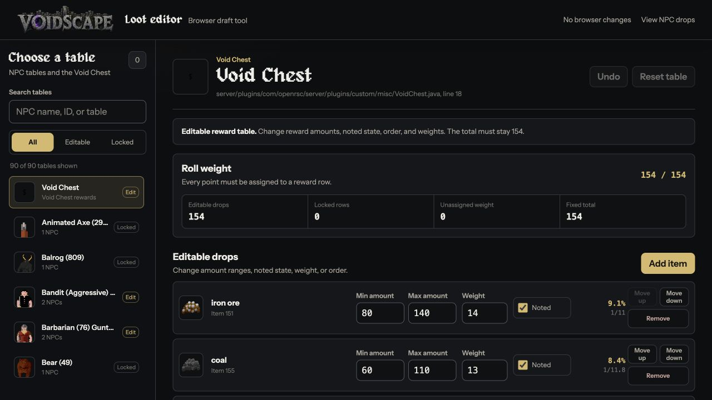
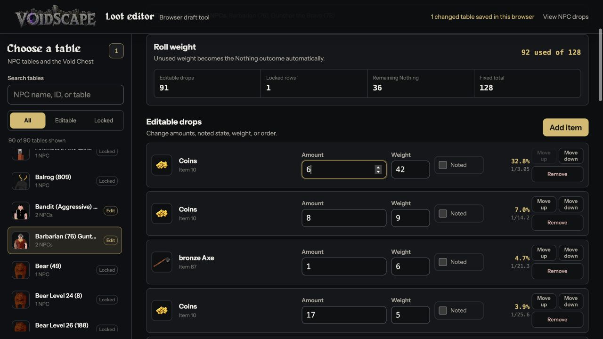
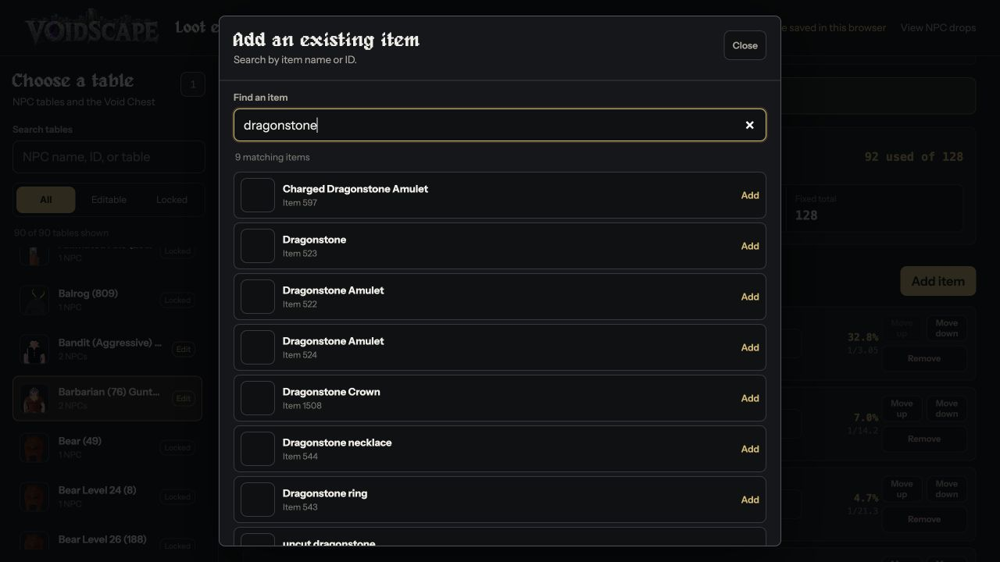
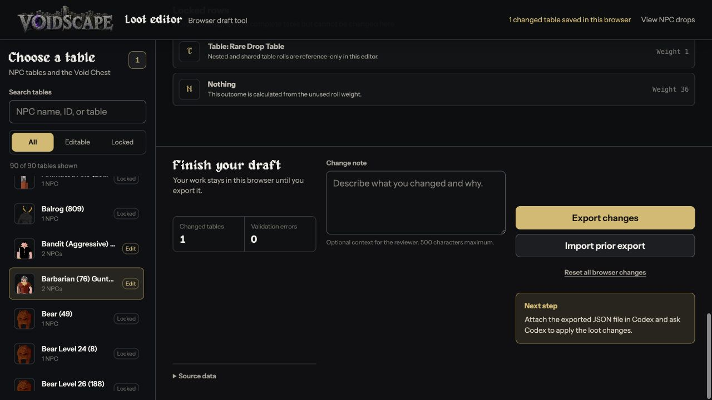

Quick picture guide
How to change loot drops
Follow these four steps. Your work saves in your browser while you go.
Choose what you want to edit
Type an NPC name in Search tables, or choose Void Chest.
Click the result you want. A table marked Edit can be changed. A table marked Locked can only be viewed.

Change a drop
Click a number, delete it, and type the new number.
The percentage beside the item shows its chance. Your change saves in this browser automatically.

Add an item if you need one
Click Add item. Type the item name, then click Add beside the correct item.
The new item starts with small numbers. Set its Amount and Weight after you add it. Use Remove if you do not want a drop anymore.

Export and send your changes
Go to Finish your draft. Make sure Validation errors says 0.
You can add a short note, then click Export changes. Your computer downloads a small .json file.

If you make a mistake
- Click Undo to undo your last change.
- Click Reset table to put the open table back to normal.
- If a red error appears, fix the numbers before you export.